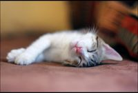
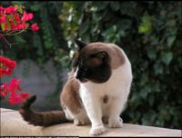

Esta web esta hecha para disfrutar del atractivo de los gatos y descubrir mas de ellos.
Los gatos domésticos, sea cual sea su raza, son todos miembros de una misma especie, Felis catus, que mantiene una relación con los humanos desde hace mucho tiempo. Tal como se muestra en la siguiente imagen.
Es un gato que ha regresado a un cierto grado de estado salvaje. Provienen de animales errantes, abandonados o perdidos que han perdido la socialización y de gatos que nunca han tenido dueño. La única diferencia con los gatos domésticos es su escasa o nula socialización con los humanos. Tal como se muestra en la siguiente imagen.
Siempre es importante darte un descanso de la vida agitada de nuestra sociedad y pensar en lo bueno que hay afuera. Si se encuentra algun problema con la información favor de comunicarse con Juan